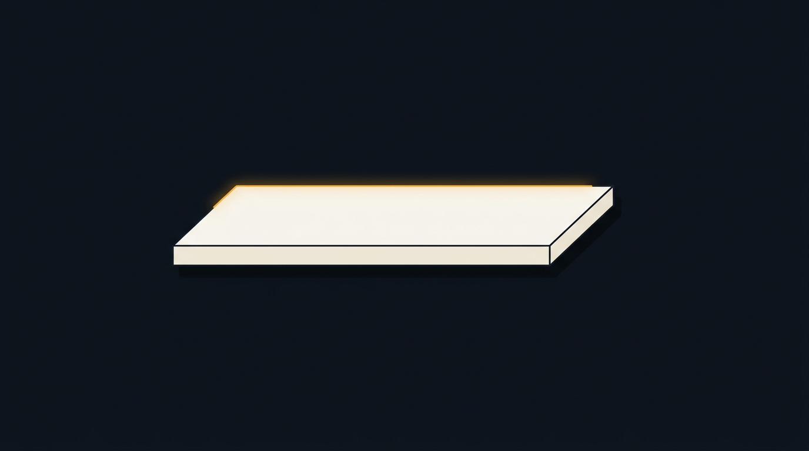
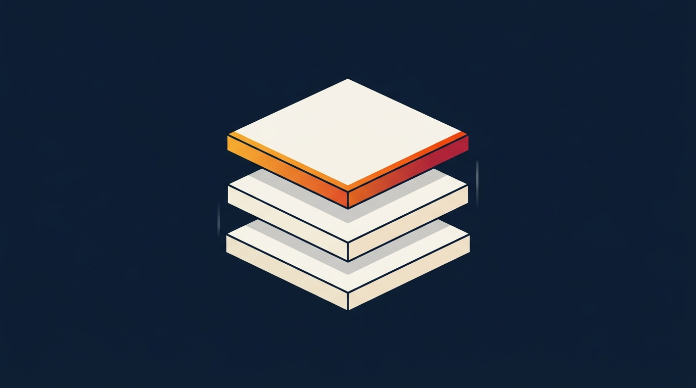
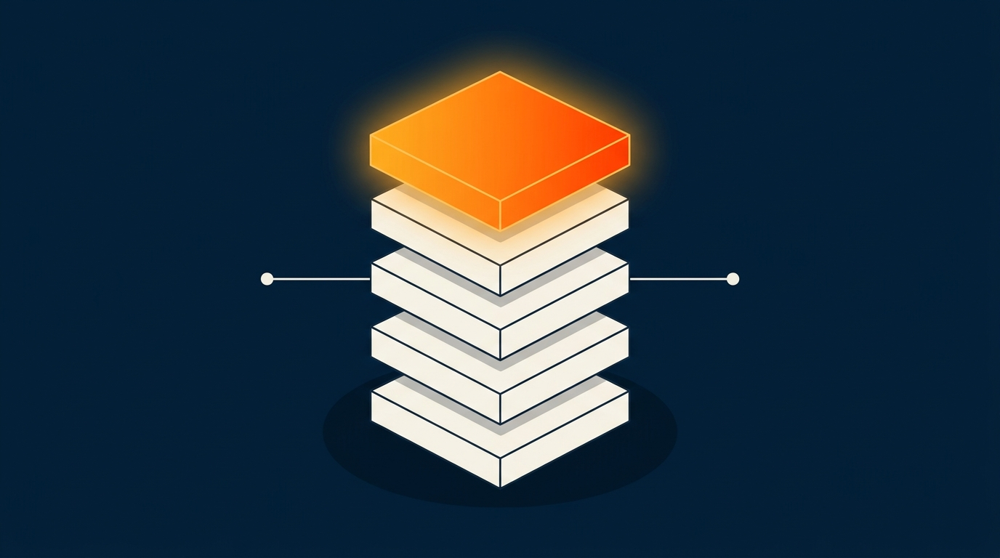
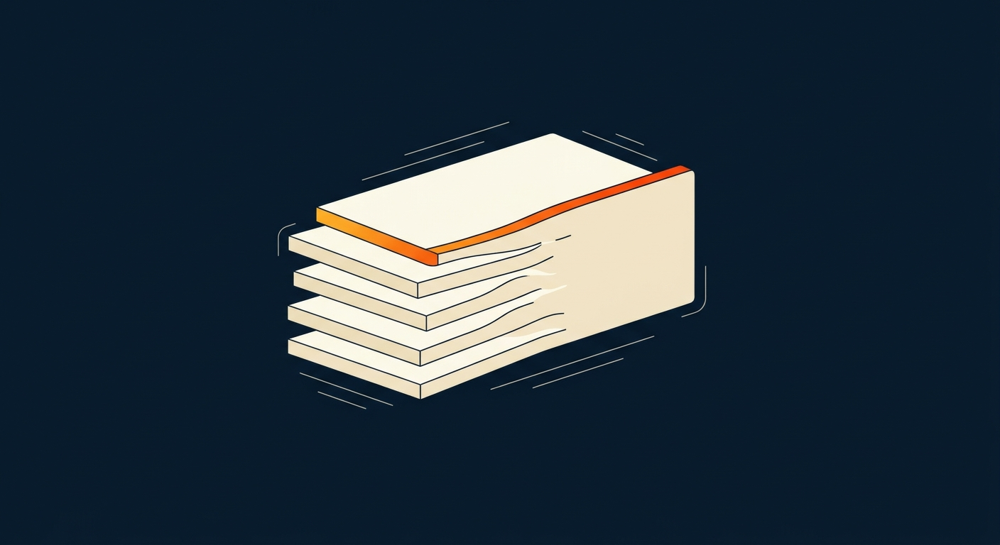
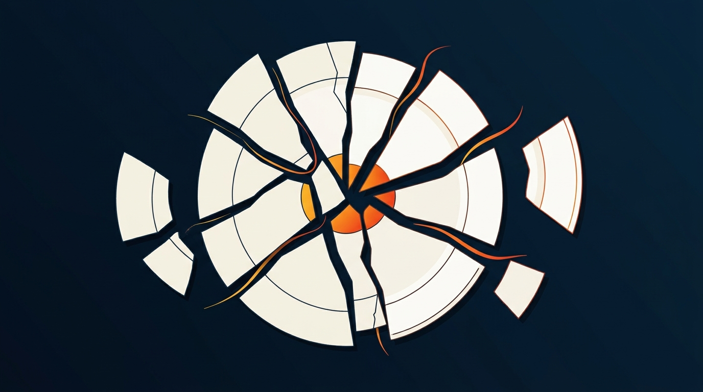
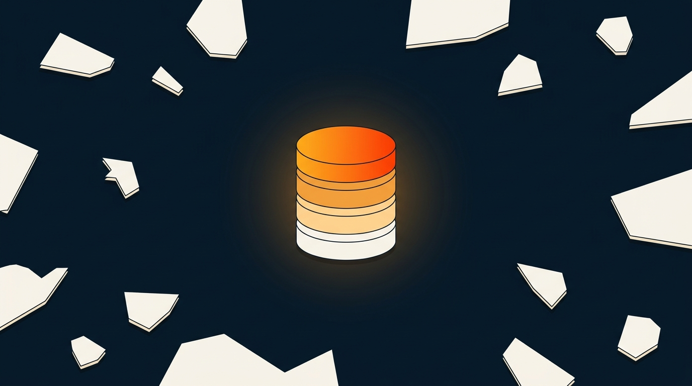
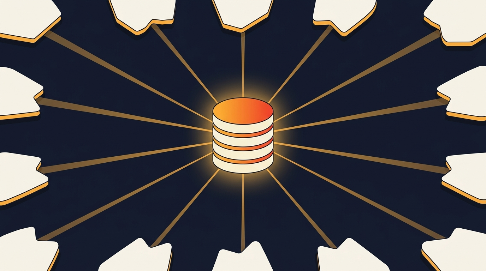
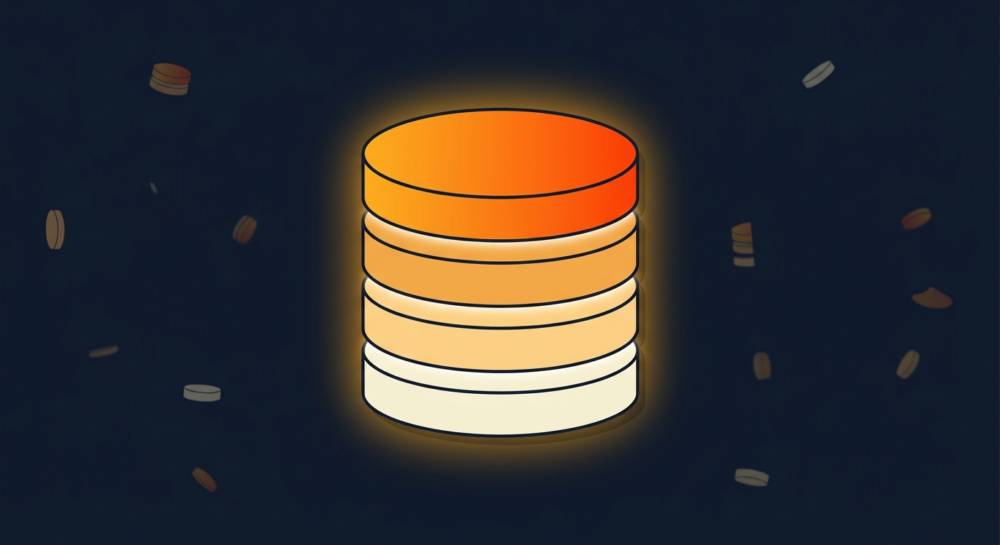

Estructura tight de 11 beats. Solo texto en pantalla, sin locución. Cada beat se desprende del anterior. Alineado con dossier institucional + script canónico.
"Ticketing companies sell tickets."
"Ticketplus was built to run the event."
Visual: canvas navy completamente vacío. Solo tipografía. El primer chunk entra centrado en blanco y se queda 2s — el viewer asimila la suposición que el video va a corregir. Luego desaparece y entra el segundo chunk con "Ticketplus" en gradient brand amber-red y "run the event" enfatizado en blanco bold. Sin elemento visual aún — apertura pura palabra sobre oscuridad, como MELI hace en sus primeros 4 segundos.
"Started in 2014. Technology built in-house ever since."
"Zero venture capital."
Visual: el texto cambia al chunk de origen con "2014" en amber accent. Mientras el texto se asienta, aparece en el centro inferior del frame una primera placa horizontal cream, delgada, con sombra suave — el seed del stacked platform que va a construirse a lo largo del video. Luego entra el segundo chunk con "Zero" en gradient brand grande y dramático. La placa permanece visible y pulsa levemente — primera evidencia de que algo se está construyendo debajo del relato.
"Five integrated layers. One codebase."
"Sales → Payments → Access → On-site → Data."
"In 11 fragmented markets, we built one integrated platform."
"It captures the data layer."
"It's the playbook every category leader followed."
"The data layer reads across four dimensions."
"Transactional · Consumer · Operator · Market."
"The data layer is already producing the next category of products."
"Marketing automation · Risk models · Operational analytics · Embedded AI."
"We grow from inside the operating infrastructure."
"Land. Learn. Convert."
"50+ partners in the pipeline."
"Two models on one platform."
"White-Label SaaS — 1.6% take rate."
"Full Operation — 17.3% take rate. 94% of revenue."
"At the center of the 95% global giants don't reach."
"2,800 partners · 10.2M tickets · $269M GMV · 95%+ retention."
"Ticketing is the entry point."
"The company is the platform."
"Different category. Different trajectory."
Cinco frames clave mostrando la transformación visual continua: computer → flattening → first slab → stacking → tower complete. Sin texto (los chunks van en post).








Metáfora visual única del relato — equivalente al anillo de MELI. Sostiene los 11 beats.